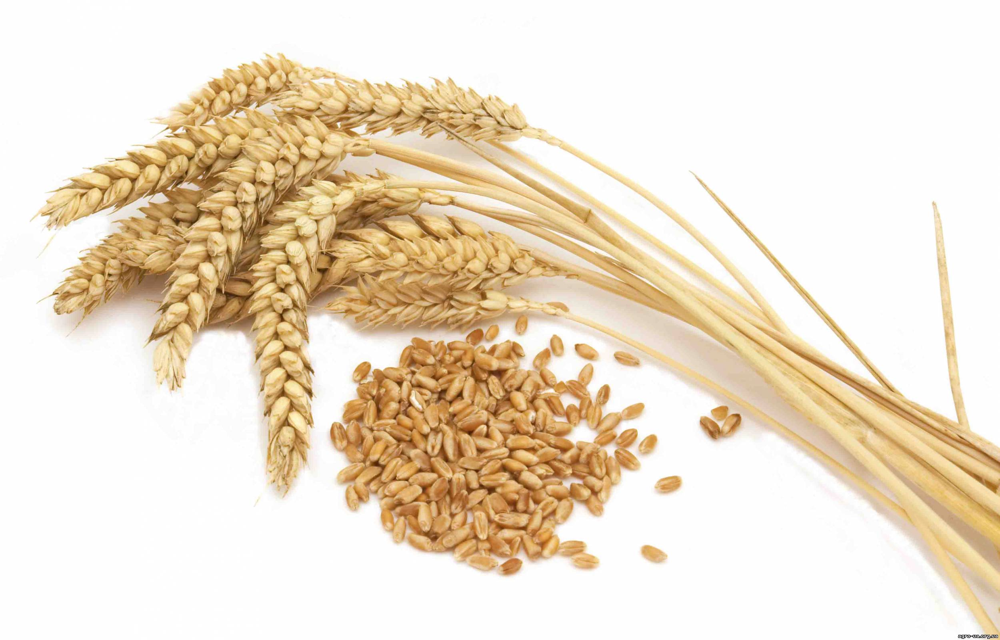
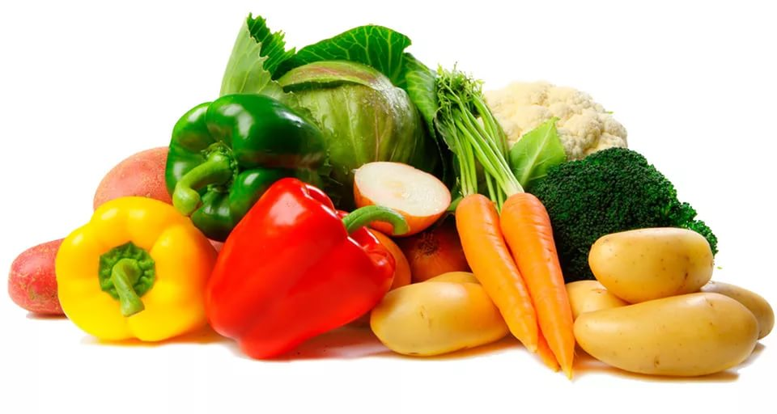
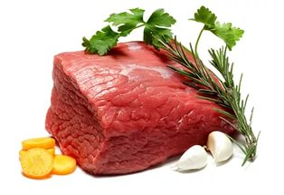
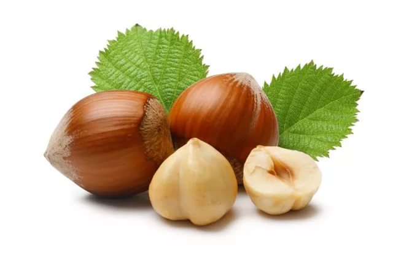
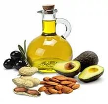
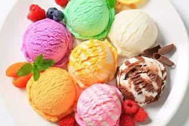

| Группа продуктов |
Количество порций в день |
Размер порций |
Примеры продуктов |
Значение в диете |
| Зерновые продукты  |
6-8 |
- 1 кусочек хлеба
- 30 г крупы или сухого завтрака
- ½ тарелки * каши или макарон
|
Хлеб (лучше цельнозерновой), пита, крупы, хлебцы, крекеры и т. п. |
Главные источники энергии и пищевых волокон |
| Овощи  |
4-5 |
- 1 тарелка резанных листовых овощей
- ½ тарелки приготовленных овощей (варка, тушение и т. д.)
- 170 мл сока овощного сока без сахара
|
Помидоры, картофель, морковь, горошек, кабачки, любая капуста, шпинат, фасоль и т. д. |
Богатые источники калия, магния и пищевых волокон |
Фрукты  |
4-5 |
- 170 мл сока,
- среднего размера фрукт
- ½ чашки** свежих или замороженных фруктов, ¼ чашки сухофруктов
|
Цитрусовые, виноград, бананы, абрикосы, персики, ягоды, финики, соки без добавки сахара |
Богатые источники калия, магния и пищевых волокон |
Молочные продукты (обезжиренные или с низким сожержанием жира)  |
2-3 |
- 220-230 мл молока
- 1 чашка йогурта
- 40-45 г сыра
|
Молоко, кисломолочные продукты, творог, сыры - все обезжиренные или низкожирные (1%) |
Богаты кальцием и белками |
| Постное мясо, птица и рыба  |
< 170 г |
- 80-90 г приготовленного мяса или рыбы
|
Мясо постное, без видимого жира, птица без кожи. Рыба может быть жирной. |
Богаты белком и магнием |
| Орехи, семечки, сухие фасоль и горох  |
4-5 в неделю |
- 40-45 г орехов,
- 2 ст. л. семечек,
- ½ тарелки приготовленной фасоли или гороха
|
Любые орехи, семечки подсолнечника и тыквы, фасоль, горох |
Богаты энергией, магнием, калием, белками и волокнами |
| Жиры и масла  |
2-3 |
- 1 ст. л. майонеза,
- 1 ч. л. растительного масла,
- 1 ч. л. спреда,
- 2 ст. л. салатного соуса
|
Спреды (мягкие маргарины), низкожирный майонез, салатные соусы, любые растительные масла |
Источник жирных кислот |
| Сладости  |
< 5 в неделю |
- 1 ст. л. сахара,
- 1 ст. л. варенья
|
Сахар, варенье, конфеты, зефир, пастила, мороженое |
Сладости должны быть с низким содержанием жира |